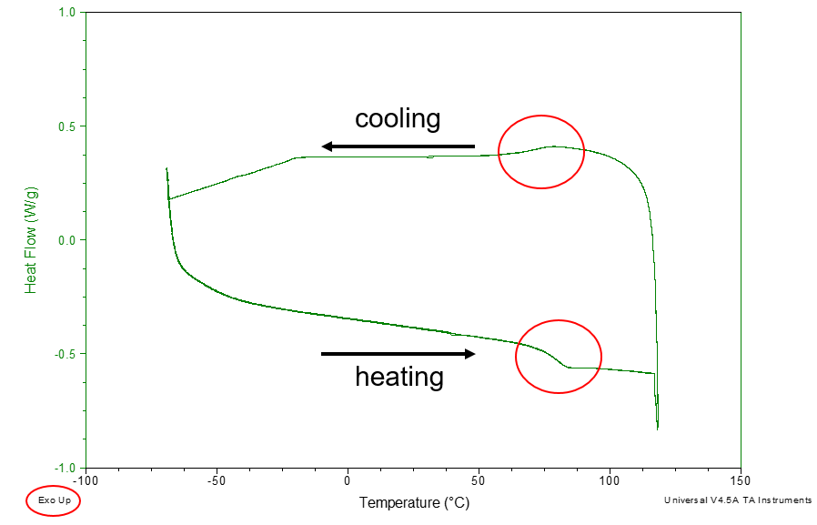
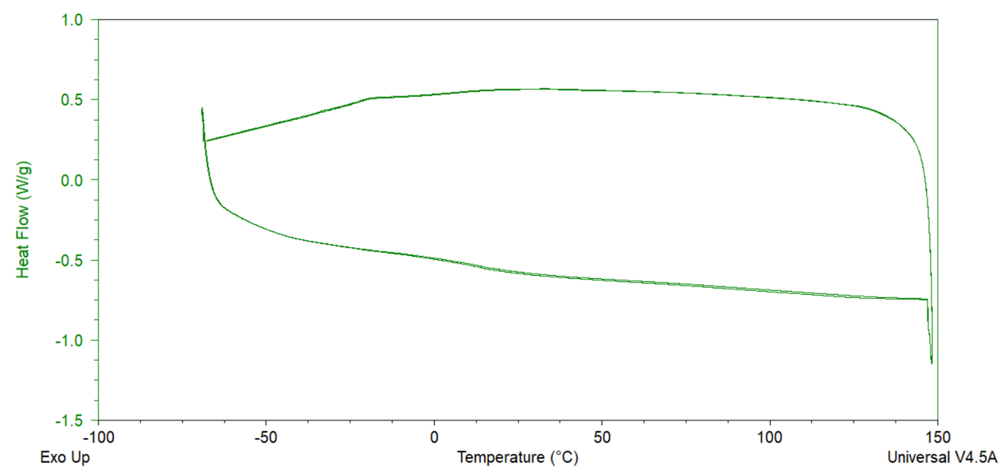
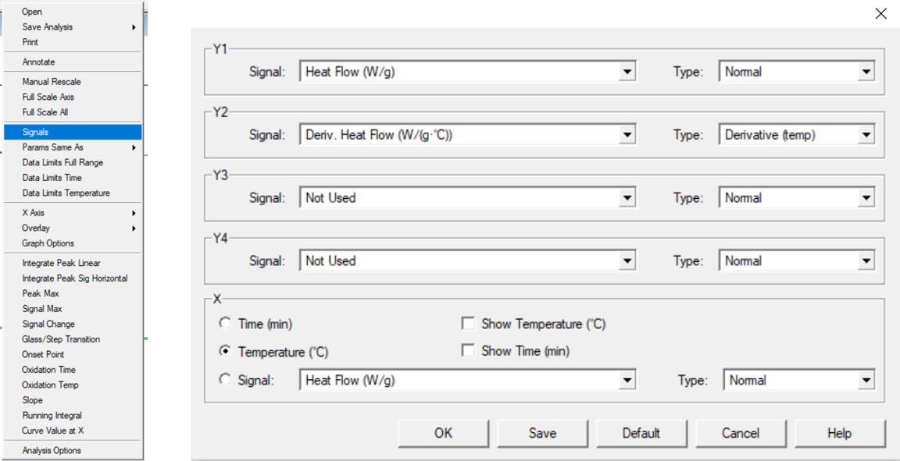
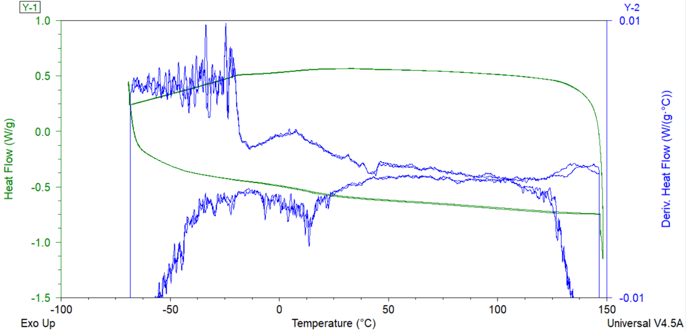

DSC detects a change of heat capacity during transition in amorphous materials from a hard "glassy" state into a rubbery state.
Tg is the reversible transition and in DSC, It should detect both heating and cooling graphs.
To determine weak Tg,
We have software 'TA Universal Analysis' to characterize Tg that is shown in the image below.

Note: Tg should detect both heating and cooling cycle and exothermic peak goes up in this image.
Derivatives of the graph can help you to detect weak Tg.

If you right-click on your graph and click Signals, you can manage the X or Y-axis. Set Y2 as a Signal: Heat Flow and Type: Derivate 'temp' and click OK.

Then you can see an additional blue line with Deriv. Heat Flow on the right side. Richt-click the axis, and change Y2 value Start: -0.01 and Stop: 0.01.

Now you can determine Tg with a broad peak in Deriv. Heat Flow.
Note: Broad peak should observe both heating and cooling. You can double-check running another experiment with a different heating rate.